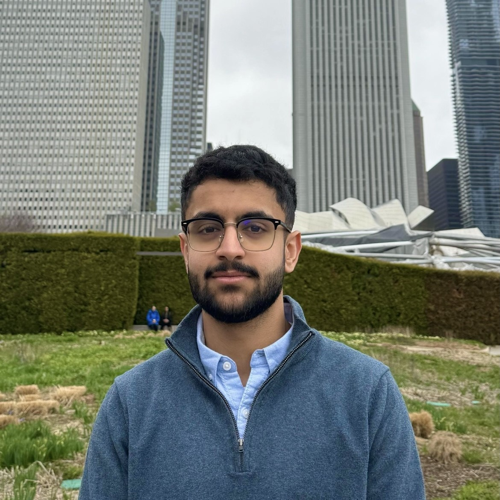

Hello! My name is Saleh Al Sabbagh. I am 20 years old and currently a Junior at UW-Madison. I am majoring in Industrial Engineering & Data Science and originally from Oman.
I created this website as part of my web development project to share a little bit about myself and the courses I’m taking this semester. Feel free to explore the pages linked above to learn more about each of my Fall 2025 classes!
If you’d like to learn more about me, you can check out my LinkedIn profile.
